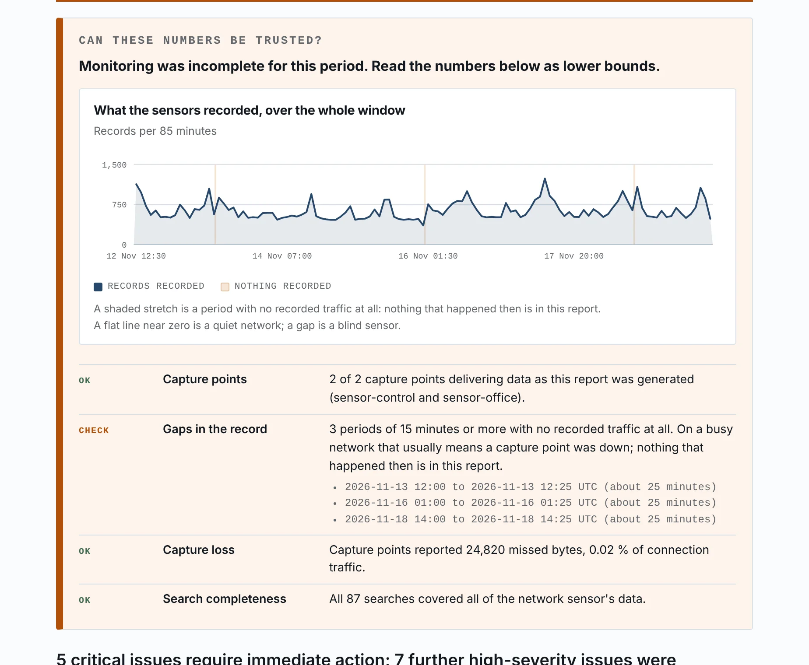

Visibilidade profunda de redes de OT e TI
Saiba o que aconteceu na rede da sua planta e o que fazer a respeito.
O Historian lê o histórico de rede que um sensor coletou na sua planta e o transforma em um relatório e em uma lista de coisas sobre as quais agir.
- 3
- visões de um mesmo relatório: diretoria, responsáveis de OT e quem faz o trabalho
- 22
- indicadores de atividade de agentes de IA no catálogo
- 3
- listas sobre as quais agir: riscos, incidentes e tarefas
- 0
- escritas na rede da sua planta
01 Ele só escuta
Nada é instalado nos seus controladores, e nada é enviado a eles.
Um ponto de captura na planta registra uma cópia do tráfego e a entrega ao sensor de rede da planta. O Historian faz perguntas ao sensor com uma conta somente de leitura. Ele nunca escreve no sensor nem na rede, e nunca pede as senhas que vê passar, apenas quantas foram.
- Um sensor de rede por planta, cada um com o histórico daquela planta
- O sensor é o Malcolm, a suíte de código aberto para análise de tráfego de rede, e continua sendo um sistema separado
- Nenhuma porta precisa ser aberta para a internet: os sensores e o Historian se encontram em uma rede privada
- Roda no seu próprio servidor
- Rede da planta
- Ponto de captura
- Sensor de rede
- Historian
- Riscos, incidentes, tarefas
02 Dá para confiar nestes números?
O relatório começa dizendo quão completamente a planta pôde ser observada.
Uma planta que está quieta porque o sensor estava fora do ar nunca deve ser lida como uma planta onde nada aconteceu. Por isso todo relatório abre com o que os sensores registraram, onde estão as lacunas e se os números abaixo são completos ou são mínimos.
- Pontos de captura entregando dados, e quando cada um entregou pela última vez
- Lacunas no registro, indicadas ao minuto
- Se o sensor recusa uma pergunta, o relatório é gerado mesmo assim e diz o que falta

03 Achados, por gravidade
Cada achado traz por que importa, o que fazer e as evidências.
Um achado é algo observado no período que exige uma decisão. Os piores vêm primeiro, e cada um pode ser rastreado até os registros por trás dele.
- Senhas enviadas em texto claro, contato com endereços maliciosos conhecidos, dispositivos que não estão no inventário
- Tendências em relação ao período anterior, para ver se o risco está subindo ou caindo
- PDF, Excel e PowerPoint a partir de cada página

04 Um relatório, três leitores
A diretoria e os responsáveis de OT fazem perguntas diferentes. Cada um tem a sua visão.
O resumo executivo responde em uma página. A visão do responsável de OT desce até o controlador. O relatório completo traz as evidências para quem faz o trabalho.
Perguntas para a diretoria
- O risco está subindo ou caindo?
- Sabemos o que há na nossa rede?
- As zonas da rede estão separadas?
- Os dispositivos da planta falam com a internet?
- Quem tem acesso remoto à planta?
- Atacantes conhecidos foram vistos?
- Algum malware circulou pela rede?
- Que comportamento de atacante foi observado, em termos do MITRE ATT&CK?
Perguntas para os responsáveis de OT
- Quem enviou comandos aos controladores?
- Quem fala com cada controlador?
- O que mudou desde o período anterior?
- Os controladores estão se comunicando sem erros?
- Quais protocolos industriais estão na rede?
- O que se sabe sobre cada dispositivo da planta?
- Quais práticas fracas ou legadas estão em uso?
- Quais softwares e versões foram vistos?

05 Agentes de IA na rede
Veja quais máquinas se comportam como um programa e não como uma pessoa.
Os agentes de IA estão chegando às redes de escritório e de planta, aprovados ou não. O Historian reúne cada máquina que mostra um indicador de atividade de IA, o que ela fez na rede e se está na sua lista de aprovados.
- Um catálogo de indicadores, e quais deles cada máquina mostrou
- Máquinas que também agiram na rede são marcadas como preocupantes
- Grupos de máquinas trabalhando em sincronia

06 Conclusões
O relatório termina em três listas sobre as quais alguém pode agir.
Os riscos vão para um registro, os incidentes para um SOC, as tarefas para uma fila. Cada avaliação traz a regra que a produziu, porque são primeiras leituras de um único período de tráfego, e a página diz isso.
- Envie as três listas a um registro do SpaceRisk com um botão. Nada é enviado até que ele seja pressionado
- Enviar de novo atualiza o que foi enviado antes e nunca cria uma segunda cópia
- Exportações para um SIEM (OCSF) e para Jira, ServiceNow ou uma caixa de e-mail, além de Excel e PowerPoint
Para o registro de riscos
Riscos
Uma fraqueza persistente, avaliada como probabilidade vezes consequência, cada uma de 1 a 5, e atribuída a um responsável.
Para o SOC
Incidentes
Algo que aconteceu e precisa de resposta agora.
Para uma fila
Tarefas
Um trabalho específico com uma fila, um prazo e uma forma de saber quando terminou.

07 Todas as plantas de uma vez
Ordene suas plantas pelo que precisa ser decidido.
Com mais de uma planta, você as vê lado a lado: qual precisa de atenção primeiro, o que é verdade em várias delas e o que é verdade em uma só, e quais não puderam ser monitoradas por completo.
- Cada linha abre o relatório daquela planta
- Achados compartilhados por várias plantas aparecem juntos
- O que não é vigiado nunca aparece como tranquilo

Veja o Historian ler a sua própria rede.
Conte-nos sobre as suas plantas e mostraremos o relatório primeiro com dados simulados e depois com os seus.